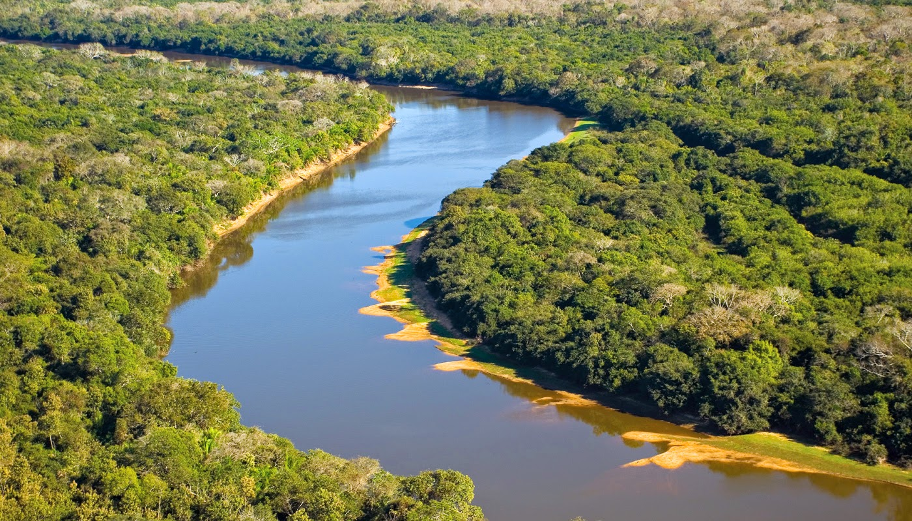

Mato Grosso do Sul é famoso pelo Pantanal, considerado uma das maiores áreas alagadas do mundo e importante destino de ecoturismo. A economia estadual se apoia na agropecuária, especialmente na criação de bovinos. Campo Grande, a capital, é reconhecida pela organização urbana e influência cultural de povos indígenas e fronteiriços. O estado também possui forte tradição rural e culinária típica baseada em peixes e carnes.
